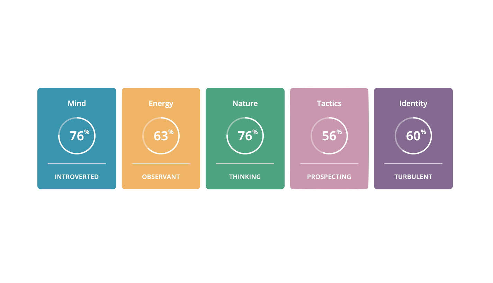

About Me
My home
 I'm Matt and I' was born in raised in sunny Brisbane, Australia (pictured left).
I'm Matt and I' was born in raised in sunny Brisbane, Australia (pictured left).
I called South East Queensland home until I was 22 years old which was when my partner and I decided to move to Melbourne, Australia. We've been living in Melbourne, our new home, since early 2019 and have been enjoying the vibrance of the city, the coffee, and the hustle-and-bustle of a place that never sleeps.
Although my LinkedIn explains it better than I can here, I started me professional career in 2015 when I joined a Polish specific organisaton in the community services secotor. Since then I have always been involced in social work in one way or another, moving from one service provider to another until 2019 when I started working for a special recruitment agency who recruits for social workers in Victoria.
My education
 When I graduated high school I decided that because I was rather good at listening to all of my friend's problems that I would study psychology. I must have figured that I might as well have been getting paid for all the advice I was giving out. Plus, I didn't mind the idea of just sitting in a lounge chair all day listening to the woes of others and helping them find solutions.
When I graduated high school I decided that because I was rather good at listening to all of my friend's problems that I would study psychology. I must have figured that I might as well have been getting paid for all the advice I was giving out. Plus, I didn't mind the idea of just sitting in a lounge chair all day listening to the woes of others and helping them find solutions.
Cut to when I started studying and discovered that psychology was not like what I had imagined at all! So, after a year of fulltime study, I decided that Psychology wasn't right for me and neither was studying univeristy on-campus.
Through my studies I did learn that I really enjoyed statistics and that I've got some good knoweledge of Excel, so started studying an online Bachelor in Accounting. Unfortunately starting full-time work meant that those studies didn't last very long and after a few lectueres I decided to withdraw from the course.
Universirty and I took a break for a few years until to now as I have decied to enroll into a Bachelor in Information Technology and I am absolutely loving it. For the first time in a long time I'm enjoying learning again and I'm excited to see where it takes me.
My Profile
My Personality Type - Myers-Briggs
ISTP-T
ISTP-T stands for Introvert, Sensing, Thinking, Perceiving and Turbulent.
View my profile here.
Learning Style - Education Planner
Tactile
If you are a tactile learner, you learn by touching and doing. You're a hands-on learner and understand things through physical movement.
View my results here.
Personality Trait - The Big 5
OCEAN
OCEAN stands for Openness, Conscientiousness, Extraversion, Agreeableness and Neuroticism.
View my results here.
What these results mean for me?
Nunc lacinia ante nunc ac lobortis. Interdum adipiscing gravida odio porttitor sem non mi integer non faucibus ornare mi ut ante amet placerat aliquet. Volutpat commodo eu sed ante lacinia. Sapien a lorem in integer ornare praesent commodo adipiscing arcu in massa commodo lorem accumsan at odio massa ac ac. Semper adipiscing varius montes viverra nibh in adipiscing blandit tempus accumsan.
What these results mean for my teams?
In arcu accumsan arcu adipiscing accumsan orci ac. Felis id enim aliquet. Accumsan ac integer lobortis commodo ornare aliquet accumsan erat tempus amet porttitor. Ante commodo blandit adipiscing integer semper orci eget. Faucibus commodo adipiscing mi eu nullam accumsan morbi arcu ornare odio mi adipiscing nascetur lacus ac interdum morbi accumsan vis mi accumsan.
What to take into account when forming a team?
In arcu accumsan arcu adipiscing accumsan orci ac. Felis id enim aliquet. Accumsan ac integer lobortis commodo ornare aliquet accumsan erat tempus amet porttitor. Ante commodo blandit adipiscing integer semper orci eget. Faucibus commodo adipiscing mi eu nullam accumsan morbi arcu ornare odio mi adipiscing nascetur lacus ac interdum morbi accumsan vis mi accumsan.